What's wrong with computer music notation?
We like to call LilyPond an "automated engraving system." It will
format music notation beautifully without requiring typographical
expertise of its users.
LilyPond is not unique in making music notation: there are a lot of
programs that print music, and nowadays most of the newly printed
music is made with computers. Unfortunately, that also shows: just
ask any musician that plays classical music: new scores do not look as
nice as old (from before, say, 1970) scores: the new ones have a
bland, mechanical look. They are not at all pleasurable to play from.
To illustrate this, take a look at the following examples. Both are
editions of the 1st Cello Suite by J.S.Bach. The one on the left is a
very beautifully hand-engraved edition from 1950, the one on the right
is a typical contemporary computer product. Take a few seconds to let
the looks of both pages sink in. Which one do you like better, and
why?
|
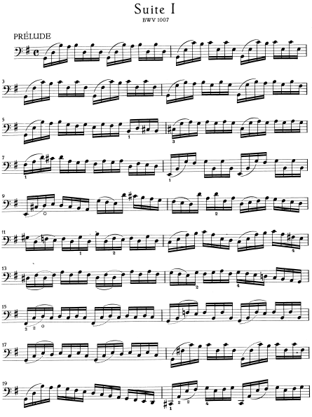
|
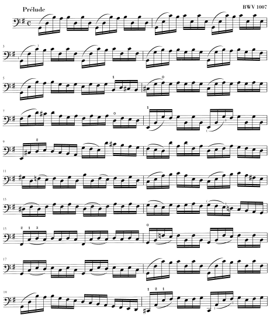
|
| Bärenreiter (BA 350, (c) 1950) |
Henle (nr. 666 (c) 2000) |
The left picture looks nice: it has flowing lines and movement. It's
music, and it's alive. Now, the picture on the right shows the same
music, and it was written by Bach. His music surely has liveliness
and flowing lines.... Except, the score doesn't show it: it looks
rigid and mechanical. To understand better why that is, let's blow up
a fragment of both pieces:
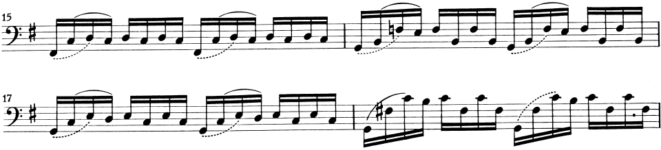
Hand-made
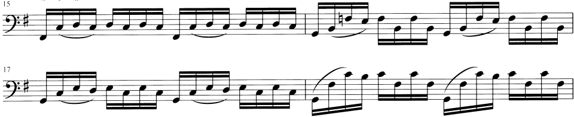
Computer-made
The location of the bar lines is a giveaway. In the Henle edition,
both barlines are on exactly the same horizontal location. In all note
heads are also on the exact same horizontal location. When you look
back at the whole page, you can easily verify that almost all barlines
are in the same location, as are most of the note heads. The entire
thing is spaced as if it were put to a big grid, which is what causes
the mechanical impression.
This is not the only error on this example, and more importantly, this
piece is not the only one with typographical errors. Sadly, almost
all music printed nowadays is full of basic typographical mistakes.
Musicians are usually more absorbed with performing the music than
with studying its looks, so this nitpicking about typographical
details may seem academical. That is not justified. This piece here
has a monotonous rhythm. If all lines look the same, they become like
a labyrinth. If the musician looks away once or has a lapse in his
concentration, he will be lost on the page.
In general, this is a common characteristic of typography. Layout
should be pretty, not only for its own sake, but especially because it
helps the reader in his task. For performance material like sheet
music, this is doubly important: musicians have a limited amount of
attention. The less attention they need for reading, the more they can
focus on playing itself. In other words, better typography translates
to better performances.
What's wrong with music notation software
Computers have made music printing accessible to the masses, but they
tend to deliver mediocre typography. Apparently, programmers have
been doing a shoddy job on notation programs. To illustrate that, we
have a piece of music, which was made in Finale 2003, one of the most
popular `professional' notation programs sold today. It was made with
all of the default settings. The music is from the Sarabande of the
2nd Cello Suite by J. S. Bach.
(Finale is a registered trademark of MakeMusic! Inc.)
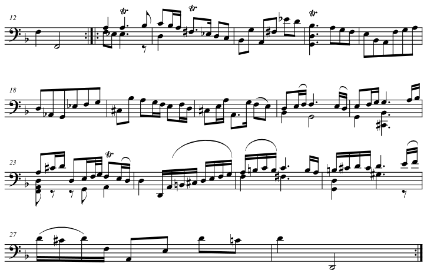
This example far surpasses the previous one when it comes to
formatting errors: there are serious errors in literally
every measure. The errors come in all sizes: a big one is the
oddly s p a c e d o u t last line. A smaller one is the flat in
measure 13, which is covered by the note preceding it. Here is a
magnification of that measure:
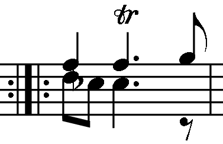
The errors go down to the teensy details: below is a blowup of the
beam in that measure. Of course, in proper typography the beam should
not stick out to the right of the stem, and the ribbles provide a
telling glimpse into Coda Music Technology programmers' aptness (or
lack thereof) with the underlying PostScript technology.
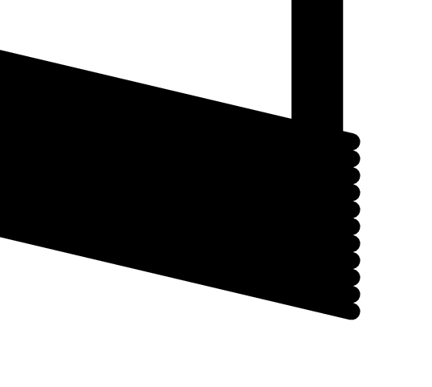
Now, one could refute that Finale has a graphical interface, and it
lets you easily move about elements to correct errors, or use plug-ins
to do so. This is certainly true: in fact, good professional
engravers that use Finale typically spend the majority of their time
correcting all the errors that Finale routinely makes. But do you
want to spend your time on correcting all glaring errors? For the
spaced out line, it is doable, but imagine that you have to correct
each and every beam that sticks out of the stems.... by hand?
There is a less obvious reason why correcting things by hand is a bad
idea. Consider again measure 13 reproduced above. The misplaced flat
is pretty obvious, but did you notice that repeat bar? Its lines are
too far apart. Did you notice that the eighth rest is too far down?
Did it occur to you that the stem of the last eighth note is too long?
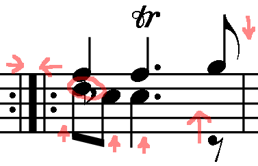
Unless you are an expert, typographical errors will irk you without
being obvious. Many of them will go uncorrected and still be in the
final print.
This is one example may seem contrived, but in fact, it's not. All
major producers of notation software claim to follow engraving
standards, but we have not seen any that gets the basics right; all of
them make systemic mistakes. If you want to assess the output of your
favorite program, then buy a decent hand-made score from a respectable
publisher, and try to reproduce one page of it. Then compare them:
-
How does the page layout compare? Typically, computer scores are more
widely spaced so they take up more pages, meaning more annoying page
turns.
-
How does the spacing compare? Is it as lively and flowing as the
hand-made score? If in doubt, try measuring both with a ruler.
-
Put both on a music stand, 1 meter away; that is not uncommon when
performing. Can you read both pages? Almost all computer scores have
an anemic look: they use lines which are too thin, and symbols which
are too light. That makes them hard to read from a distance. If in
doubt, measure the difference with a magnifying glass.
Better music notation software
Most notation software needs babysitting to produce acceptable output.
In our opinion, all this tweaking and tuning is something that a
computer should do for you.
Our goal with LilyPond is to write an an automated
engraving system: a system that will produce beautiful music
("engraving") automatically. In concept, such a system is simple: the
objective of such a system is to produce music notation, a graphical
image. The content of this picture is music: pitches and
durations. In automated system, we want to generate the form from the
content, so schematically, the program could be represented as
|
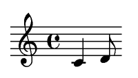
|
<--
|
\notes { c'4 d'8 }
|
|
form
|
LilyPond
|
content
|
Music notation
Common music notation encompasses some 500 years of music. Its
applications range from monophonic melodies to monstruous counterpoint
for large orchestras. How can we get a grip on such a many-headed
beast? Our solution is to make a strict distinction between notation,
what symbols to use, and engraving, where to put
them. For tackling notation, we have broken up the problem into
digestible (and programmable) chunks: every type of symbol is handled
by a separate plugin. All plugins cooperate through the LilyPond
architecture. They are completely modular and independent, so each
can be developed and improved separately.
- The most basic plug-in creates Note-heads:

This plug-in creates graphical objects from musical events. People
that put graphics to musical ideas are called copyists or engravers,
so by analogy, this plug-in is called Note_head_engraver.
- The Staff_symbol_engraver generates the object
representing the staff lines.

-
The Clef_engraver tells Note_head_engraver how high
each head should be placed.

-
For the flags and stems we add a Stem_engraver:

This engraver is notified of any note head coming along. Every time
one (or more, for a chord) note heads is seen, a stem object is
created, and attached to the note head.
-
Beams, slurs, accents are handled by separate engravers. Like the
Stem_engraver, they create objects and connect them to stems,
note heads, etc.:

-
Accidentals, bar lines, time signature, and key signature each have a
separate
engraver.

The Accidental_engraver is the most complex plug-in: it has
to look at the key signature, note pitches, ties, and bar lines to
decide when to print accidentals.
Polyphonic notation
The system shown in the last section works well for monophonic music,
but what about polyphony? In polyphonic notation, many voices can
share a staff:

In this situation, the accidentals and staff are shared, but the
stems, slurs, beams, etc. are private to each voice. Hence, engravers
should be grouped. The engravers for note head, stems, slurs, etc. go
into a group called "Voice context," while the engravers for key,
accidental, bar, etc. go into a group called "Staff context." In the
case of polyphony, a single Staff context contains more than one Voice
context. Similarly, more Staff contexts can be put into a single
Score context:

Music engraving
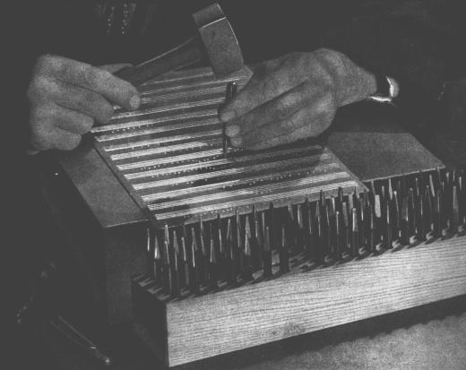
When we know what symbols to print, we have to decide where to put
them so the the result looks pleasing. This art is called music
engraving. The term derives from the traditional process of
music printing. Only a few decades ago, sheet music was made by
cutting and stamping the music into zinc or pewter plates in mirror
image. The plate would be inked, and the depressions caused by the
cutting and stamping would hold ink. An image was formed by pressing
paper to the plate. The stamping and cutting was completely done by
hand. Making corrections was cumbersome, so engraving had to be done
correctly in one go. Of course, this was a highly specialized skill
- Music engraving is a traditional craft, and was learned in
practice. An accomplished master had to complete around 10 years of
practice.
- Most of the knowledge was passed from master to apprentice during
practical training. Consequently, little has been explicitly laid down
about the rules of elegant engraving.
- Finally, engraving is about selecting proper distance and
blackness for scores. 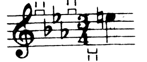 The
quality of the end result must judged visually. This is virtually
impossible to capture in formal rules.
Implementing typography
How do we go about implementing typography? Answering the "music
notation" problem left us with a bunch of graphic objects
representings note heads, the staff, stems, etc.
If craftsmen need over ten years to become true masters, how could we
simple hackers ever write a program to take over their jobs?
The answer is: we cannot! Since typography relies on human judgement
of appearance, people cannot be replaced. However, much of their dull
work can be automated: if LilyPond solves most of the common
situations correctly, than this will be a huge improvement over
existing software. The remaining cases can be tuned by hand.
Over the course of years, the software can be refined to do
more and more automatically, so manual overrides are necessary less
and less.
How do we go about building such a system? When we started, we wrote
the program in C++. Essentially, this means that the program
functionality is set in stone by us developers. That proved to be
unsatisfactory:
- If things must be tuned by hand, then the user must access to the
formatting engine. Hence, data structures and variables cannot be
fixed at compile time, but they must be accessible for the user.
- Engraving is a matter of visual judgement, and hence it is a
matter of taste. As knowledgeable as we are, users can disagree with
our personal decision. Therefore, the definitions of typographical
style must also be accessible to the user.
- Finally, we continually refine the formatting algorithms, so we
need a flexible approach to rules. C++ forces us to group and apply
rules that do not match how music notation works.
Clearly, there is a need for a flexible architecture. The architecture
should encompass formatting rules, typographical style and individual
formatting decisions.
A Flexible formatting architecture
Remember the music notation problem? The solution of it left us with a
bunch of objects. The formatting architecture is built on these
objects. Each object carries variables:
Notation benchmarking
A flexible architecture is necessary for good
formatting. Unfortunately, it is not sufficient. Only a careful
emulation of printed matter will give a good result. We suggested in
the introduction to compare program output with existing hand-engraved
scores. It is exactly this technique that we use to perfect LilyPond
output. In a way, this a benchmarking technique: the performance of
the program, in terms of quality, is measured in relation to a known
quantity.
Here you see parts of a benchmark piece. At the top the reference
edition (Bärenreiter BA 350) at the bottom the output from
LilyPond 1.4:

Bärenreiter

LilyPond 1.4
The LilyPond output is certainly readable, and for many people it would be
acceptable. However, close comparison with a hand-engraved score
showed a lot of errors in the details:

- Lots of symbols were unbalanced. In particular the trill sign was
too large.
- Stems and beams were all wrong: the stems were too long, and
beam should be slanted to cover staff lines exactly. The beam was also
too light.
- The spacing was irregular: some measures were too tight, other
too wide.
By addressing the relevant algorithms, settings, and font designs, we
were able to improve the output. The output for LilyPond 1.8 is shown
below. Although it is not a clone of the reference edition, this
output is very close to publication quality.

LilyPond 1.8
Bärenreiter
Font design
A large factor that makes LilyPond output look traditional lies in the
blackness of the page. By using heavy stafflines, and a font design to
match that, the overall impression is much stronger. This is also very
clear from the following blowups:
 |
 |
 |
| Henle (2000) |
Bärenreiter (1950) |
LilyPond (2003) |
Another typical aspect of hand-engraved scores is the general look of
the symbols: they never have sharp corners. We suspect that this is
due to the mechanics of the reproduction process. This general
rounded shape is also present in all glyphs of our "Feta" font.
Spacing
One of the problems that the Bach piece above inspired us to attack,
is the spacing engine. One of its features is optical spacing.
It is demonstrated in the fragment below.


This fragment only uses quarter notes: notes that are played in a
constant rhythm. The spacing should reflect that. Unfortunately, the
eye deceives us a little: not only does it notice the distance between
note heads, it also takes into account the distance between
consecutive stems. As a result, the notes of an up-stem/down-stem
combination should be put farther apart, and the notes of a down-up
combination should be put closer together, all depending on the
combined vertical positions of the notes. The top fragment is printed
with this correction, the bottom one without. In the last case, the
down-stem/up-stems combinations form clumps of notes.